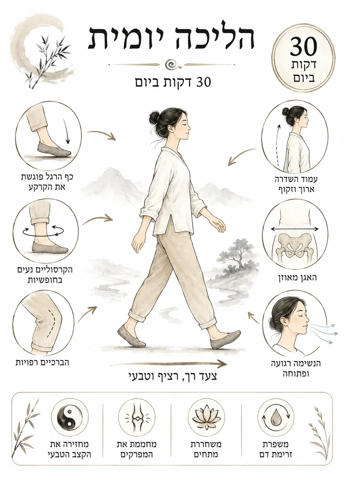

תורת המדינה הדואלית
מודל מדינה חדש לעידן של AI, משבר דיור, קיטוב חברתי ואובדן אמון במוסדות: שוק חופשי לצד מסלול אזרחי יציב, בנק דואלי, קונצרן לאומי ולולאת הון בלתי נזילה.
האתר בנוי כמערכת רעיונית אחת: מדינה, תודעה, בריאות, חינוך, בוטים, ספרים וציוויליזציה. בחרו שער כניסה — והמשיכו לעמוד המתאים.
מודל מדינה חדש לעידן של AI, משבר דיור, קיטוב חברתי ואובדן אמון במוסדות: שוק חופשי לצד מסלול אזרחי יציב, בנק דואלי, קונצרן לאומי ולולאת הון בלתי נזילה.
הבוטים נועדו להפוך רעיונות לכלי שימושי: בוט למדינת שוק דואלי, ובוט “העד” שמכוון לחשיבה בהירה, התבוננות, איזון והבנת מערכות.
לפני מדינה חדשה, צריך אדם יציב יותר. ספר יסוד מחבר בין יציבה, תנועה, נשימה ותודעת העד — כבסיס אישי פשוט ובריא לחיים מודעים יותר.
סולם העדות מציע מבט חדש על ציוויליזציות: לא רק כמה כוח וטכנולוגיה יש להן, אלא איזו תודעה מחזיקה את הכוח הזה — ריסון, אחריות, מודעות ומטא־קוגניציה.
אוצרות הטאו הם שער עדין לילדים ולעולם הפנימי: סיפורים על נשימה, סבלנות, טבע, תנועה, קבלה ושקט — בשפה פשוטה שמלמדת דרך חיים.
מי שמרגיש שהרעיונות האלה צריכים להמשיך להתפתח יכול להצטרף לעדכונים: מאמרים חדשים, ספרים, בוטים, פיתוחים, הרצאות וכלים לעתיד.
עמוד עתידי שיאסוף תשובות פשוטות לשאלות המרכזיות: האם המדינה הדואלית היא סוציאליזם? מה ההבדל מקפיטליזם? איך הבנק עובד? ולמה AI משנה את כללי המשחק?
עמוד מרכזי שיאגד את שמונת מאמרי הליבה: המדינה הדואלית, המטוטלת ההיסטורית, לולאת ההון, הבנק, AI, הקונצרן הלאומי, תודעת העד וסולם העדות הציוויליזציונית.
עמוד עתידי למי שרוצה להזמין שיחה, הרצאה, שיתוף פעולה, קבוצת לימוד, פיתוח בוטים או דיון עומק סביב מודלים חדשים לאדם, חברה וציוויליזציה.
מאת נדב טלר — תורת המדינה הדואלית, ספר יסוד, אוצרות הטאו, סולם העדות הציוויליזציונית ובוטים חכמים להתבוננות וללמידה.

עמוד עומק ייעודי לקידום בגוגל: מודל מדינת שוק דואלי, דיור, עבודה, AI, תעשייה, בנק ציבורי ורצפה אזרחית.
פתח את העמוד המרכזיקטלוג ספרים עם חיפוש, סינון, כפתורי אמזון ועברית, והפרדה בין ספרי ילדים, פילוסופיה, גוף ומדינה.
לכל הספריםקישורים ישירים לטלגרם: בוט המדינה הדואלית ובוט העד — עם אפשרות להעתיק את שם המשתמש.
לבוטיםהמודל מציע לא לבחור בין קצה קפיטליסטי לקצה ריכוזי, אלא לבנות מערכת דואלית: שוק חופשי ליזמות ותחרות לצד רצפה אזרחית שמעניקה ביטחון, דיור, חינוך ותעסוקה.


הצטרפות דרך טופס קצר. מתאים לקוראים, תומכים, אנשי חינוך, מתעניינים במודל ובמשתמשים בבוטים.